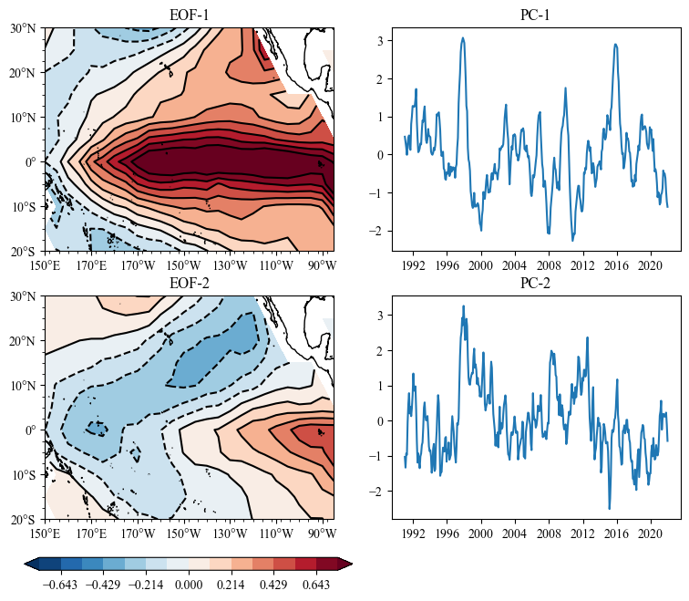
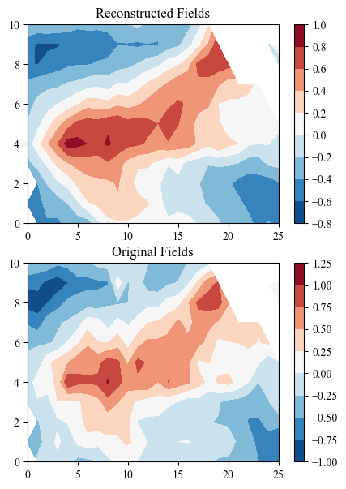

Empirical Orthogonal Function¶
Parameter¶
data (np.ndarray): shape (time, * space grid number)
weights : shape (* space grid number , or can be broadcast to space grid number)
Method¶
- solve: solve the EOF results of dataargs:method (str): ‘svd’ or ‘eig’ or ‘dask_svd’if ‘dask_svd’, use dask to solve , another parameters are also required. dim_min: the minimum patterns of data to be solvedchunks: the chunks to split data in the daskif ‘svd’, use numpy to solveif ‘eig’, use numpy to solve
- north_test: north test of EOF resultsargs:npt (int): number of modes to be testedperc (Bool): if True, return the proportion of errorreturn:typical errors of each pattern
get_pc(npt): get princple components of first npt modes
get_pt(npt): get spatial patterns of first npt modes
get_eign: get eign values of EOF result
get_varperc: get the proportion of mode variance
load_pt: load space patterns of extral data rather than from solving
decoder: project pcs on patterns to get original fields
Example¶
load Modules¶
[1]:
import sacpy as scp
import numpy as np
import matplotlib.pyplot as plt
Get SST and SSTA data¶
[2]:
sst = scp.load_sst()["sst"].loc[:, -20:30, 150:275]
ssta = scp.get_anom(sst)
EOF Calcualtion¶
[3]:
eof = scp.EOF(ssta)
eof.solve(method='dask_svd', chunks={'time': 1000}, dim_min=10)
# or
eof.solve()
# or
eof.solve(method='svd')
# or
eof.solve(method='eig')
Get EOF result¶
[4]:
# get pc and pattern
pc = eof.get_pc(npt=2)
pt = eof.get_pt(npt=2)
# get proprtion of mode variance
eof.get_varperc(npt=3)
[4]:
array([0.53846117, 0.1339264 , 0.06592592])
Plot the EOF Results¶
[5]:
import cartopy.crs as ccrs
import sacpy.Map
lon , lat = ssta.lon , ssta.lat
# =========================set figure================================
fig = plt.figure(figsize=[9,7])
# ========================= ax ================================
ax = fig.add_subplot(221,projection=ccrs.PlateCarree(central_longitude=180))
m1 = ax.scontourf(lon,lat,pt[0,:,:],cmap='RdBu_r',levels=np.linspace(-0.75,0.75,15),extend="both")
ax.scontour(m1,colors="black")
ax.init_map(smally=2.5)
ax.set_title("EOF-1")
# ========================= ax2 ================================
ax2 = fig.add_subplot(222)
ax2.plot(sst.time,pc[0])
ax2.set_title("PC-1")
# ========================= ax3 ================================
ax3 = fig.add_subplot(223,projection=ccrs.PlateCarree(central_longitude=180))
m2 = ax3.scontourf(lon,lat,pt[1,:,:],cmap='RdBu_r',levels=np.linspace(-0.75,0.75,15),extend="both")
ax3.scontour(m2,colors="black")
ax3.init_map(smally=2.5)
ax3.set_title("EOF-2")
# ========================= ax4 ================================
ax4 = fig.add_subplot(224)
ax4.plot(sst.time,pc[1])
ax4.set_title("PC-2")
# ========================= colorbar ================================
cb_ax = fig.add_axes([0.1,0.03,0.4,0.02])
fig.colorbar(m1,cax=cb_ax,orientation="horizontal")
[5]:
<matplotlib.colorbar.Colorbar at 0x15e776f20>

Reconstruction use PT and patterns¶
[6]:
eof = scp.EOF(ssta)
eof.solve()
pc = eof.get_pc(npt=10)
pt = eof.get_pt(npt=10)
# eof.load_pt(pt)
res = eof.decoder(pc.T)
plt.figure(figsize=[5,7])
plt.subplot(211)
plt.title("Reconstructed Fields")
plt.contourf(res[0])
plt.colorbar()
plt.subplot(212)
plt.title("Original Fields")
plt.contourf(ssta[0])
plt.colorbar()
[6]:
<matplotlib.colorbar.Colorbar at 0x15edce5c0>
